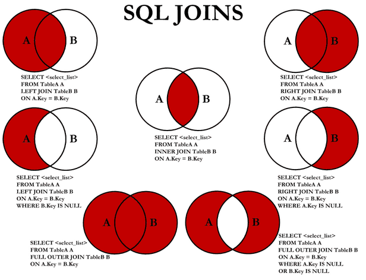

IT Notebook
Great things come to those who don’t wait.
Great things come to those who don’t wait.
Assicurare elevate perfomance con JDBC in Weblogic
Public void myTopLevelJDBCMethod() {
Connection c = null; // defined as a method-level object, not accessible or kept where other threads can use it.
… do all pre-JDBC stuff…
// The try block, in which all JDBC for this method (and sub-methods) will be done
Try {
// Get the connection directly, fresh from a WLS datasource
c = myDatasource.getConnection();
… do all your JDBC… You can pass the connection to sub-methodshod
doMyJDBCSubTaskWith( c );
c.close(); // close the connection as soon as all JDBC is done
c = null; // so the finally block knows it’s been closed if it was ever obtained.
.. do whatever else that may remain that doesn’t need JDBC.
..I have seen *huge* concurrency improvements by closing the connection ASAP
} catch (Exception e) {
.. do what you want/need, if you need a catch-block, but *always* have the finally block:
} finally {
// If we got here somehow without closing c, do it now, without fail, as the first thing in the finally block so it always happens
If (c != null) try {c.close();} catch (Exception ignore){}
… do whatever else you want in the finally block
}
}
Ottimizzazioni generiche: Al fine di sviluppare applicazioni performanti che utilizzano RDBMS, condivido le principali best practices da adottare in termini di sviluppo e configurazione.
In una base di dati relazionale si possono realizzare diverse tipologie di relazioni tra le tabelle, andando a definire quindi diverse categorie di join.
In particolare, il JOIN è una clausola del linguaggio SQL che serve a combinare (unire) le tuple di due o più relazioni di un database tramite l'operazione di congiunzione (od unione) dell'algebra relazionale. Lo standard ANSI definisce alcune specifiche per il linguaggio SQL sul tipo di JOIN da effettuare: INNER, FULL, LEFT e RIGHT. In alcuni casi è possibile che una tabella possa essere combinata con se stessa, in questo caso si parlerà di self-join.
La totale comprensione delle differenze tra esse permette di evitare inconvenienti ed errori di relazione durante la fase di sviluppo e test. Per chiarire visivamente le differenze tra i vari join ed i risultati ottenuti tra due tabelle, risulta intuitivo ed utili visualizzare il seguente diagramma che spiega in modo conciso ma chiaro i diversi join con i diversi risultati ottenuti:
